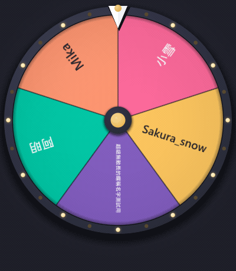
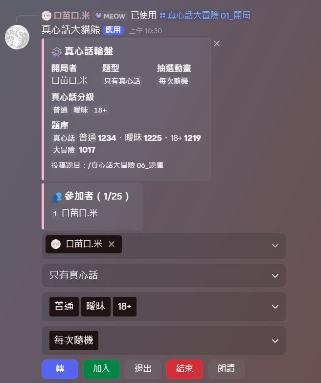
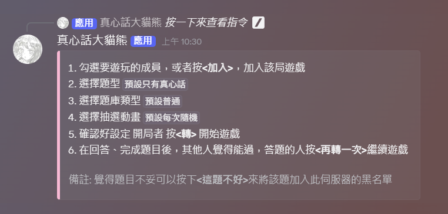
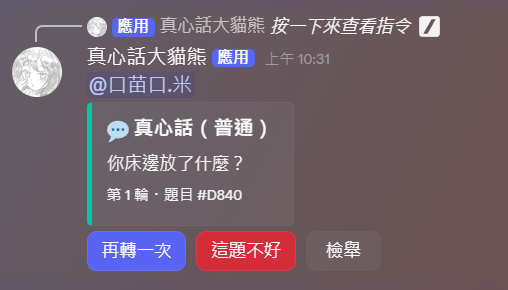
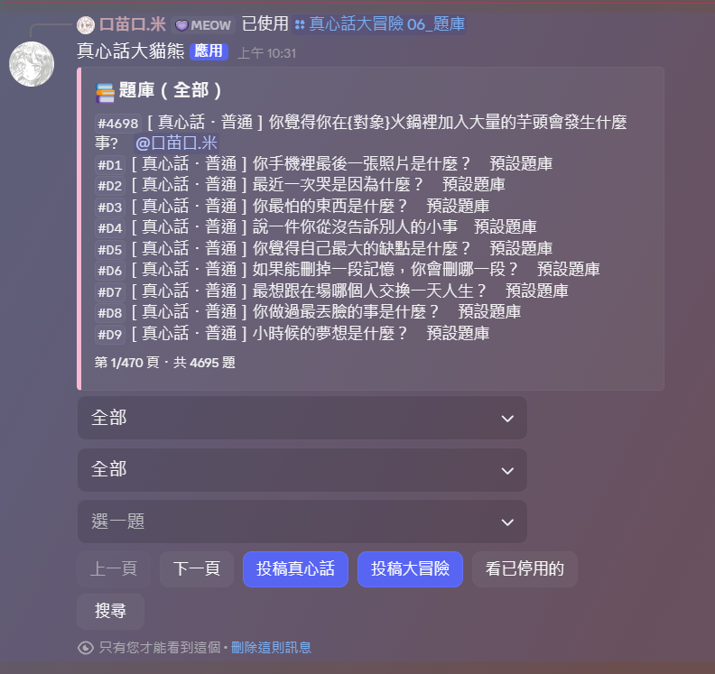
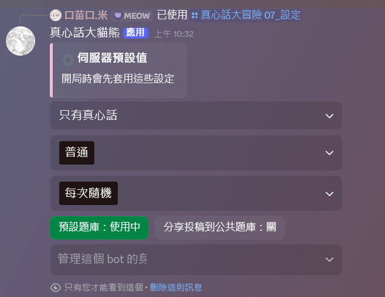

開始
快速開始
在 Discord 頻道裡轉輪盤抽人，被抽到的人回答真心話或做大冒險。內建 4700 多題、24 種抽選動畫，也能讓 bot 在語音裡唸題目。

三步開始玩
- 開局在想玩的文字頻道輸入
/真心話大冒險 01_開局 - 拉人大家按面板上的 加入，或由開局者在成員選單直接勾人
- 開轉按 轉，看動畫抽到誰，題目會直接 @ 他
答完之後按 再轉一次 換下一個人。玩夠了按 結束。
一個頻道同時只能有一局。想在別的頻道同時玩，到那個頻道再開一局就好。
接下來看什麼
開始
指令一覽
所有指令都在 /真心話大冒險 底下，只能在伺服器裡用。名稱前面的編號是為了讓 Discord 照順序排。
| 指令 | 做什麼 | 誰能用 |
|---|---|---|
01_開局 | 在這個頻道開一局，可以順便選題型 | 所有人 |
02_加人 | 用 @ 把人加進這局，一次最多 5 人 | 開局者、管理員 |
03_退出 | 自己退出；填成員就是請那個人退出 | 自己：所有人 別人：開局者、管理員 |
04_結束 | 結束這個頻道的局 | 開局者、管理員 |
05_朗讀 | 叫 bot 進語音唸題目，或請它離開 | 參加者、開局者、管理員 |
06_題庫 | 看題、投稿、搜尋、刪題 | 所有人 |
07_設定 | 伺服器預設值與管理身分組 | 管理員 |
08_說明 | 遊玩方式和這份說明的連結 | 所有人 |
大部分事情直接按面板上的按鈕就好，不用記指令。
玩遊戲
遊戲面板
開局後頻道裡會出現這個面板，一局的設定都在這裡。

上半部：這局的狀態
- 題型、抽選動畫、真心話分級
- 這局現在的設定
- 題庫
- 每種題目還有幾題可以抽
- 參加者
- 目前名單，最多 25 人
- 左邊的色條
- 粉色＝可以轉了；灰色＝還沒人或沒有題目
四個選單
只有開局者和管理員能改，別人改了會自動還原。
- 成員
- 直接把大家勾進來。選單只列一部分人，打字可以搜尋名字
- 題型
- 只有真心話／只有大冒險／兩種隨機／抽到的人自己選
- 真心話分級
- 普通、曖昧、18+，可以多選
- 抽選動畫
- 勾幾種輪流出現，或選「每次隨機」
五個按鈕
- 轉
- 開始這一輪（參加者都能按）
- 加入
- 把自己加進名單
- 退出
- 把自己移出名單
- 結束
- 結束這局（開局者、管理員）
- 朗讀
- 叫 bot 進語音唸題目，見 朗讀
遊玩方式
面板下面會再發一則遊玩方式，給第一次玩的人看。裡面的「預設」是這個伺服器的預設值。

玩遊戲
揭曉題目
動畫播完，bot 會發一則新訊息 @ 被抽到的人，附上題目。

訊息上的按鈕
- 再轉一次
- 答完了，抽下一個人。只有最新一輪的按鈕有效
- 這題不好
- 這個伺服器以後不再出這題（管理員可以在題庫恢復）
- 檢舉
- 題目內容有問題，寫原因私下告訴 bot 管理者
最下面那行
「第 1 輪・題目 #D840」是第幾輪和題號。D 開頭是內建題庫的題，純數字是伺服器自己投的題。
特殊情況
- 題目裡有別人的名字
- 投稿時寫了
{對象}，bot 會換成另一位參加者 - 哈哈全部人都要!
- 抽到這格時，全部人回答同一題
- 題型「自己選」
- 抽到的人先選 真心話 或 大冒險，只有他能按。拖太久的話開局者可以按 跳過
玩遊戲
朗讀
bot 會進語音頻道，每一題都唸出來，適合邊開語音邊玩。
- 先進語音頻道你自己要在語音裡
- 按面板的 朗讀bot 會進到你所在的頻道
- 照常玩每次揭曉都會唸「玩家，題型：題目」
- 不在語音裡按
- 會跳出「有人的語音頻道」讓你選
- 自動離開
- 10 分鐘沒唸東西，bot 會自己離開
- 叫它先走
/真心話大冒險 05_朗讀，動作選「離開」
一個伺服器裡 bot 同時只能在一個語音頻道（Discord 的規定）。bot 重新啟動後不會自己回來，要再按一次朗讀。
玩遊戲
抽選動畫
共 24 種，在面板的「抽選動畫」選單挑。可以勾好幾種輪流出現，或選「每次隨機」。
題目
題庫與投稿
輸入 /真心話大冒險 06_題庫。看題、投稿、管題都在這個畫面，只有你自己看得到。

畫面上的東西
- 第一個選單
- 篩題型：全部／真心話／大冒險
- 第二個選單
- 篩真心話分級：全部／普通／曖昧／18+
- 選一題
- 選了之後下面會出現刪除、停用或恢復按鈕
- 上一頁／下一頁
- 一頁 10 題
- 搜尋
- 打幾個字，只列出含有這些字的題目
- 看已停用的
- 被按過「這題不好」的題，管理員可以恢復
投稿
- 先選分級在第二個選單選要投到哪一級（選「全部」就是普通）
- 按 投稿真心話 或 投稿大冒險會跳出輸入框
- 打題目送出2～300 字，成功會告訴你題號
想點名別人：寫 {對象}
投稿時寫 {對象}，出題時會換成另一位參加者的名字。
| 你投的題目 | 出題時看到的 |
|---|---|
| 你覺得 {對象} 會不會火鍋加芋頭？ | 你覺得 阿明 會不會火鍋加芋頭？ |
| 跟 {對象} 交換一樣隨身物品一輪 | 跟 Mika 交換一樣隨身物品一輪 |
刪除、停用、恢復
在「選一題」選了題目，下面會出現對應的按鈕：
| 選到的題 | 按鈕 | 誰能按 |
|---|---|---|
| 伺服器自己投的題 | 刪除 | 投稿的人、管理員 |
| 內建題（D 開頭） | 停用 | 這頻道那局的參加者、管理員 |
| 已停用的題 | 恢復 | 管理員 |
bot 內建 4694 題（真心話三個分級＋大冒險），所有伺服器共用，轉的時候會跟你們自己投的題一起抽。內建題不能刪，只能停用；不想用整個內建題庫，管理員可以在 伺服器設定 關掉。
管理
伺服器設定
管理員輸入 /真心話大冒險 07_設定。選了馬上存，只影響這個伺服器。

- 題型、分級、動畫
- 每局一開始的預設值，局裡還是可以在面板上改
- 預設題庫
- 關掉後只抽你們自己投的題
- 分享投稿到公共題庫
- 打開會把你們的題送去審核，審過的會加進所有伺服器共用的題庫
- 管理身分組
- 勾選的身分組在 bot 裡等同管理員，見 權限
管理
權限
bot 裡有三種身分：參加者、開局者、管理員。
- 參加者
- 名單上的人。可以轉、再轉一次、停用題目、叫 bot 朗讀
- 開局者
- 開這局的人。另外可以改面板、加人、請人退出、跳過、結束
- 管理員
- 任何一局都能管，還能刪任何題、恢復題目、改伺服器設定
誰算管理員
- 有 Discord「管理員」或「管理伺服器」權限的人
- 伺服器擁有者
- 有 伺服器設定 裡勾選的「管理身分組」的人
「管理身分組」名單本身只有真正的伺服器管理員能改，有這個身分組的人不能再把權限給別人。
其他
常見問題
點問題展開答案。
勾成員時找不到某些人？
Discord 的選單只會列出一部分成員。在選單裡打他的名字搜尋就找得到，或請他自己按「加入」。
開局時說「這個頻道已經有一局」？
按那則訊息下面的「結束」，或輸入 /真心話大冒險 04_結束，再重新開局。只有開局者和管理員能結束。
轉的時候說沒有題目可以抽？
這局選的題型和分級底下沒有題目。多勾一個分級、到題庫投幾題，或請管理員在設定打開預設題庫。
題目一直重複？
bot 會先避開最近出過的題，但題目少的分級還是容易重複。多勾幾個分級或多投一些題會好很多。
按鈕說「這一輪已經結束了」？
你按到舊訊息上的按鈕了。捲到最下面，按最新那則。
忘了按結束會怎樣？
沒關係，6 小時沒人動的局會自動結束。bot 重新啟動也不會讓進行中的局不見。
朗讀沒有聲音？
bot 可能已經閒置 10 分鐘自己離開了。確認它還在語音頻道裡，不在就再按一次「朗讀」。
題目內容不妥？
按「這題不好」，這個伺服器以後就不會再出這題。要讓 bot 管理者知道，按「檢舉」寫原因。